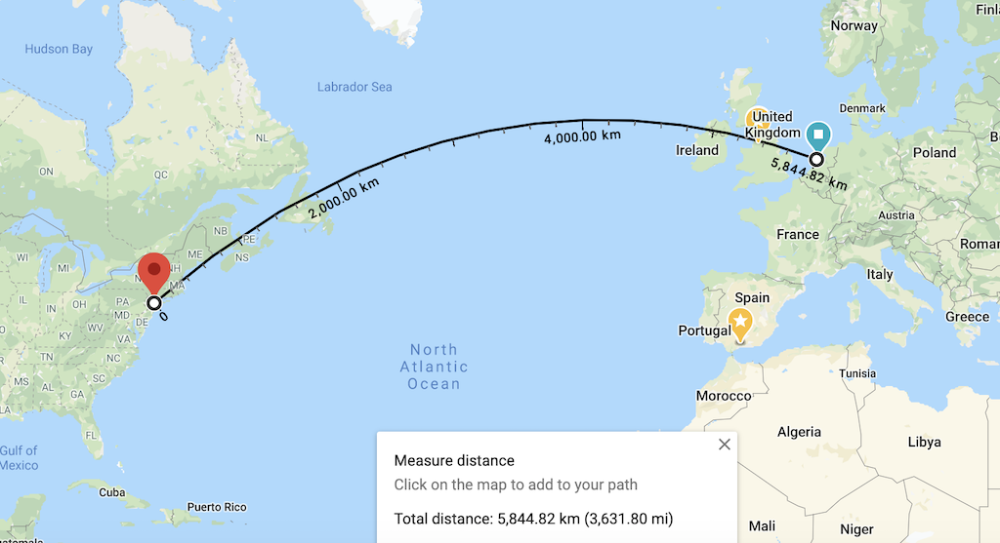
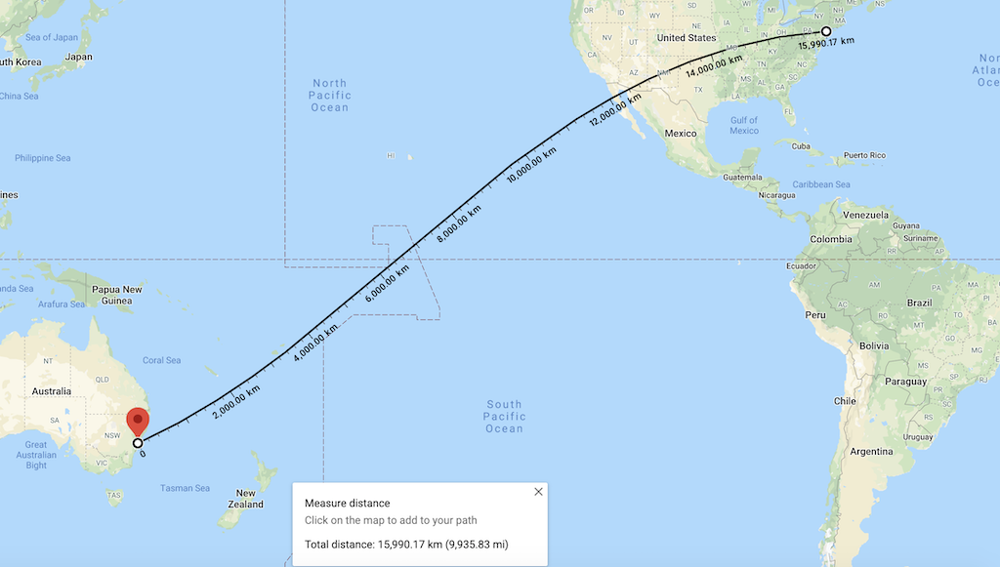

Networking 101
History of Internet (video)
Ip Address Exhaustion Solution
Class based network
- Class A - 16 million = 2^24
- Class B - 65,536
- Class C - 256
Possible solutions:
- NAT - Having private address
- CIDR - Classless Inter domain routing
- Reclaim addresses
- IPv6 - 128 bit addresses =
Speed is a feature
| Delay | User perception |
|---|---|
| 0–100 ms | Instant |
| 100–300 ms | Small perceptible delay |
| 300–1000 ms | Machine is working |
| 1,000+ ms | Likely mental context switch |
| 10,000+ ms | Task is abandoned |
Because faster sites mean
- better user engagement
- better user retention
- better conversion
Transatlantic cable "Hibernia Express" was laid between London and NewYork to give an edge of
~5 millisecondsover other transatlantic cables

Latency is caused by
- Propogation delay = distance/speed of medium(light)
- Transmission delay = time required to push all data bits into the link
- Transmitting 10MB data over 100Mbps link would be faster (0.8 sec) than sending it over 1Mbps link (80 sec). 10MB = 80Mb
- Processing delay = time taken by router to process the packet header, check for bit-level errors and determine packet's destination
- Queuing delay = time the packet waits in router's incoming buffer before it can be processed
Refractive Index = Speed of light / Speed of light in the medium
Eg., Refractive index of Optical fiber is \~1.4. Therefore, maximum speed of light in optical fiber = 200,000,000 m/sec
| Route | Distance | Latency | RTT |
|---|---|---|---|
| NewYork to SanFrancisco | ~4000km | ~20ms | ~40ms |
| NewYork to Amsterdam | ~6000km | ~30ms | ~60ms |
| NewYork to Sydney | ~16000km | ~80ms | ~160ms |
| Earth's Circumference | ~40000km | ~200ms | ~200ms |
 
TCP
TCP provides an effective abstraction of a reliable network running over an unreliable channel. It hides most of the complexity of network communication from our applications: * retransmission of lost data * in-order delivery * congestion control and avoidance * data integrity * and more
TCP is optimized for accurate delivery, rather than a timely one.
Three-way Handshake
 Thus, each new connection will have a full roundtrip of latency before any application data can be transferred.
Thus, each new connection will have a full roundtrip of latency before any application data can be transferred.
Congestion Avoidance and Control
Design Philosophy of DARPA Internet Protocols
Fundamental Goal
- Effective technique for multiplexed utilization of existing interconnected networks (ARPANET, PRNET)
- Sharing/multiplexing was solved with Packed switching
- Interconnection was solved with
narrow waist

Secondary goals
- Survivability in the face of failure:
- Replication
- Fate-sharing - acceptable to lose state information of an entity if the entity itself is lost. Eg., Routing tables lost when a router crashes
- Heterogenity
- achieved through TCP/IP
- TCP provided flow control and reliability though some usecases didn't need it. Eg., streaming (voice/video), DNS resolution
- TCP works on best effort which makes debugging hard
- achieved through TCP/IP
- Distributed Management
- Addressing (ARIN, RIPE, etc)
- Naming (DNS)
- Routing (BGP)
End-to-End Argument
Summary: Dumb network and intelligent endpoints
Eg., Violation NAT which maintains a map of device ip and port on private network to the static public ip and port
Switching & Bridging
Host hosts find each other on the network
Each Network Adapter has a MAC address and a computer can send a Ethernet datagram to another computer if it knows the recipient's MAC address. But in reality only DNS name or IP of the destination machine is known.
ARP protocol
- Broadcast asking for IP.
- Receive a unicast with MAC address
- Build a table of IP to MAC address
Hub : Broadcast Switch: Do traffic isolation
Learning Switch
- Floods the network when there is no mapping. Otherwise, send to the correct port.
Loop and Broadcast Storms
Routing
Types: * Intradomain * Interdomain
Different Autonomous Systems (AS): * ISPs * Service providers (Google, etc) * Standalone institutions (Universities)
Node = PoPs (Points of Presence) usually located in densely populated centers Edges have fiber paths which are closer to major transportational routes
Intradomain routing
Distance-Vector routing
Uses Bellmann-Ford algorithm
References: